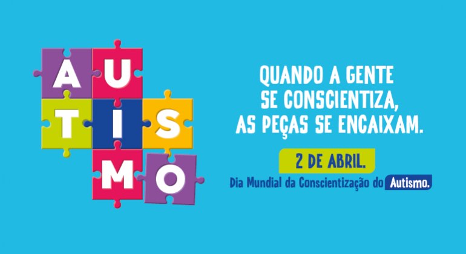

Abril Azul: Dia Mundial de Conscientização do Autismo
O Dia Mundial de Conscientização do Autismo é celebrado em 2 de abril. A campanha Abril Azul busca aumentar a conscientização e a aceitação das pessoas com Transtorno do Espectro Autista (TEA), promovendo inclusão, respeito e compreensão na sociedade.
O que é Autismo?
O Transtorno do Espectro Autista (TEA) é uma condição do neurodesenvolvimento que afeta a comunicação, interação social e comportamento. Cada pessoa com autismo é única, com características e habilidades próprias. O espectro é amplo e diverso, englobando desde pessoas com suporte mínimo até aquelas que necessitam de apoio contínuo.
Por que o Azul?
A cor azul (ou luz azul) foi escolhida como símbolo da conscientização sobre o autismo. Muitos edifícios e monumentos ao redor do mundo são iluminados em azul nesta data como forma de solidariedade e apoio às pessoas autistas e suas famílias.
Importância da Inclusão
A inclusão de pessoas com autismo em escolas, locais de trabalho e comunidades é fundamental para uma sociedade mais justa e diversa. Compreender as diferenças, respeitar particularidades e oferecer apoio adequado são passos essenciais para garantir que pessoas com TEA possam desenvolver seu potencial pleno.
Como Apoiar?
- Educar-se sobre o autismo e combater mitos e estigmas
- Apoiar organizações e instituições que trabalham com pessoas autistas
- Promover espaços inclusivos e acessíveis
- Valorizar a neurodiversidade e as contribuições das pessoas autistas
- Ouvir e respeitar as vozes das próprias pessoas com autismo
"O autismo não é uma doença a ser curada, mas uma parte importante da diversidade humana. Toda pessoa com autismo merece respeito, aceitação e a oportunidade de viver uma vida plena e significativa."